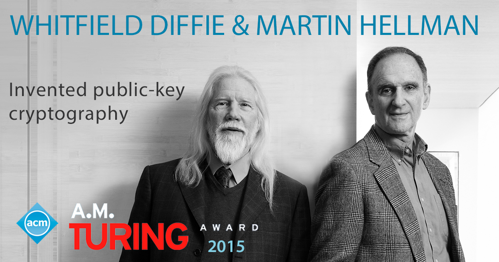
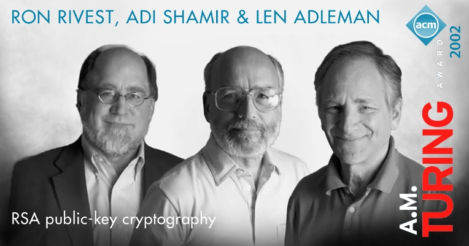
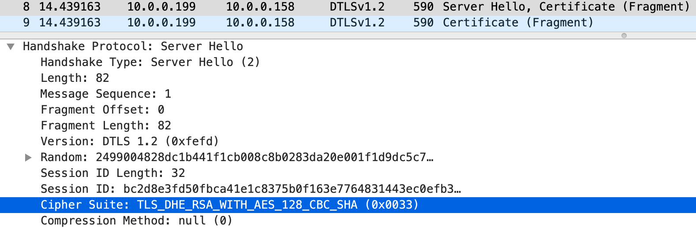
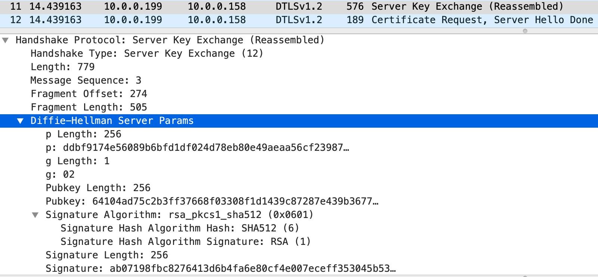
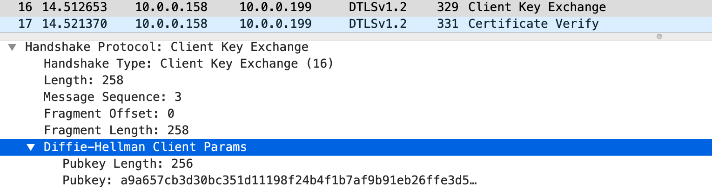

Does Diffie-Hellman Key Exchange Use a Technology Similar to RSA?
Recently, at a WPA3 technology introduction meeting within the R&D team, the speaker mentioned that the OWE technology for encrypted wireless open networks is based on Diffie-Hellman key exchange, and casually said that Diffie-Hellman key exchange is using technology similar to RSA. This statement is wrong! Although Diffie-Hellman key exchange and RSA encryption algorithms belong to public key cryptography, their working mechanisms and application scenarios are different. As a research and development engineer and technician supporting network security, it is necessary to clearly understand the working mechanism and mathematical principles of the two, as well as the differences and connections between them.
Diffie-Hellman Key Exchange
Diffie-Hellman key exchange (DH for short) is a secure communication protocol that allows two communicating parties to exchange messages over an insecure public channel to create a shared secret without any foreknowledge. This secret can be used to generate keys for subsequent communications between the two parties using symmetric encryption techniques (e.g. AES).
The idea of this kind of public key distribution to achieve shared secrets was first proposed by Ralph Merkle, a doctoral student of Stanford University professor Martin Hellman, and then Professor Hellman's research assistant Whitfield Diffie and Professor Herman jointly invented a practical key exchange protocol. In 1976, Diffie and Hellman were invited to publish their paper "New Directions in Cryptography" in IEEE Transactions on Information Theory, which laid the foundation for the public key cryptography system and officially announced the birth of the new Diffie-Herman key exchange technology.
The working principle of Diffie-Hellman key exchange is based on the modular exponentiation operation with the multiplicative group of integers modulo n and its primitive root modulo n in number theory. The following is a simple and specific example to describe:
- Alice chooses a prime number \(p=71\), and then a primitive root \(g=7\) of the multiplicative group of integers modulo \(p\)
- Alice chooses a random number \(a=17\) that is less than \(p\), calculate \(A=g^a\bmod\;p=7^{17}\bmod\;71 = 62\)
- Alice sends all \((p,g,A)\) to Bob
- Bob also chooses a random number \(b=39\) that is less than \(p\), calculate \(B=g^b\bmod\;p=7^{39}\bmod\;71 = 13\)
- Bob sends \(B\) back to Alice
- Alice calculates \(s=B^a\bmod\;p=13^{17}\bmod\;71 = 42\)
- Bob calculate \(s=A^b\bmod\;p=62^{39}\bmod\;71 = 42\)
Is it troublesome calculating \(\color{#93F}{\bf62^{39}\bmod\;71}\)? It is actually very easy……
Remember that modular arithmetic has the property of preserving primitive operations: \[(a⋅b)\bmod\;m = [(a\bmod\;m)⋅(b\bmod\;m)]\bmod\;m\] Combining with the principle of Exponentiation by Squaring, and applying the right-to-left binary method to do fast calculation: \[\begin{align} 62^{39}\bmod\;71 & = (62^{2^0}⋅62^{2^1}⋅62^{2^2}⋅62^{2^5})\bmod\;71\\ & = (62⋅10⋅(62^{2^1}⋅62^{2^1})⋅(62^{2^4}⋅62^{2^4}))\bmod\;71\\ & = (62⋅10⋅(10⋅10)⋅(62^{2^3}⋅62^{2^3}⋅62^{2^4}))\bmod\;71\\ & = (62⋅10⋅29⋅(29⋅29⋅62^{2^3}⋅62^{2^4}))\bmod\;71\\ & = (62⋅10⋅29⋅(60⋅60⋅62^{2^4}))\bmod\;71\\ & = (62⋅10⋅29⋅(50⋅50))\bmod\;71\\ & = (62⋅10⋅29⋅15)\bmod\;71\\ & = 42 \end{align}\]
As if by magic, both Alice and Bob get the same \(s\) value of \(42\). This is the shared secret of two people! After this, Alice and Bob can use the hash value of \(s\) as a symmetric key for encrypted communication, which is unknown to any third party.
Why? Because of the nature of the modular exponentiation of the multiplicative group, \(g^{ab}\) and \(g^{ba}\) are equal with the modulo \(p\):
\[A^b\bmod\;p=g^{ab}\bmod\;p=g^{ba}\bmod\;p=B^a\bmod\;p\]
So calculated \(s\) values must be the same. Of course, real applications would use much larger \(p\), otherwise the attacker can exhaust all the remainder to try to crack the ciphertext encrypted by the symmetric key.
Notice \((p,g,A,B)\) is public and \((a,b,s)\) is secret. Now suppose an eavesdropper Eve can see all the messages between Alice and Bob, can she deduce \(s\)? The answer is that this is only practically possible if the values of \((p,a,b)\) are very small. Eve must first invert \((a,b)\) from what she knows about \((p,g,A,B)\):
- \(A=g^a\bmod\;p\Rightarrow \color{fuchsia}{a = log_g A\bmod\;p}\)
- \(B=g^b\bmod\;p\Rightarrow \color{fuchsia}{b = log_g B\bmod\;p}\)
This is the famous discrete logarithm problem. It is a recognized computational challenge and no polynomial-time efficient algorithm is currently found to compute the discrete logarithm. So this protocol is considered eavesdropping-safe as long as the appropriate \((p,a,b)\) is chosen. RFC 3526 recommends 6 Modular Exponential (MODP) DH groups of large prime numbers for practical applications, the smallest of which has 1536 bits!
It should also be emphasized that Diffie-Hellman key exchange itself does not require authentication of both communicating parties, so it is vulnerable to man-in-the-middle attacks. If an attacker can tamper with the messages sent and received by both sides in the middle of the channel, he can complete Diffie-Hellman key exchange twice by pretending to be an identity. The attacker can then decrypt the entire message. Therefore, usually practical applications need to incorporate authentication mechanisms to prevent such attacks.
Diffie-Hellman key exchange technique is a crucial contribution to modern cryptography. In 2015, 39 years after the announcement of this invention, Diffie and Hellman jointly won the ACM Turing Award, known as the "Nobel Prize of Computing". The ACM award poster directly stated that they "invented public key cryptography".

RSA Encryption Algorithm
RSA is a public key encryption algorithm. The public key encryption system with the same name as the core technology is widely used in secure data transmission. Today, the comprehensive development of the Internet has provided great convenience to the public in all aspects of society. Whether you are surfing, gaming, entertaining, shopping, instant messaging with friends and family, managing a bank account, investing in financial securities, or simply sending and receiving email, RSA is working behind the scenes to protect your privacy and data security.
RSA is actually an acronym for the last names of three people: American cryptographer Ronald Rivest, Israeli cryptographer Adi Shamir, and American computer scientist Leonard Max Adleman. In 1977, Levister, Shamir, and Adleman collaborated at the Massachusetts Institute of Technology (MIT) to invent the RSA encryption algorithm. The algorithm was first published in a public technical report at MIT, and later compiled and published in the February 1978 issue of ACM Communications under the title "A Method for Obtaining Digital Signatures and Public Key Cryptosystems".
The basic idea of RSA is that the user creates a key pair consisting of a public key and a private key. The public key is freely distributed and the private key must be kept secret. Anyone can encrypt a message with the public key, and the resulting ciphertext can only be deciphered by the private key holder. On the other hand, any message encrypted with the private key can be decrypted by the public key. Since we assume that the private key can only be held by a specific object, encrypting with the private key is equivalent to generating a digital signature, and decrypting with the public key is equivalent to verifying the signature.
The RSA encryption algorithm consists of a four-step operational process: key generation, key distribution, encryption, and decryption. A simple and concrete example is also given below to illustrate.
- Alice randomly chooses two prime numbers \(p=127\) and \(q=5867\), computes \(N=pq=745109\)
- Alice computes Carmichael's totient function \(\lambda(N)=\lambda(745109)=52794\)
- When \(p\) and \(q\) are both primes, \(\lambda(pq)=\mathrm{lcm}(p − 1, q − 1)\)
- \(\mathrm{lcm}\) represents the function for the least common multiple, which may be calculated through the Euclidean algorithm
- \(\mathrm{lcm}(126,5866)=52794\)
- Alice chooses an integer \(e=5\) less than \(\lambda(N)\) but also coprime with \(\lambda(N)\), and calculates the modular multiplicative inverse of \(e\) modulo \(\lambda(N)\). That is \(d\equiv e^{-1}\pmod {\lambda(N)}\), \(d=10559\)
- The definition of modular multiplicative inverse is, determine \(d\) such that \((d⋅e)\;\bmod\;\lambda(N)=1\)
- \(d=10559\equiv 5^{-1}\pmod {52794}\)
- \(\pmb{(N,e)}\) is Alice's public key，\(\pmb{(N,d)}\) is her private key
- Alice sends her public key \((745109,5)\) to Bob
- Alice saves her private key \((745109,10559)\) in a secret place
- Alice distroies all records of \(p,q,\lambda(N)\)
- When Bob wants to send Alice a message \(M\), according to the encoding format agreed upon by both parties, he first translates \(M\) to one or more positive integers \(m\) that are all less than \(N\), and then uses Alice's public key to compute the ciphertext \(c\) one by one. The calculation formula is \(\pmb{c\equiv m^e\pmod N}\)
- Assume \(M\) is "CACC 9678", and the encoding scheme is 0 for spaces, 1-26 for a-z/A-Z (ignoring case), and 27-36 for 0-9
- Encoding yields the positive integer string "030103 030036 333435". Note that each integer is less than 745109
- After encryption, it becomes ciphertext integer string "184539 741303 358095"
- \(184539 \equiv 30103^5\pmod {745109}\)
- \(741303 \equiv 30036^5\pmod {745109}\)
- \(358095 \equiv 333435^5\pmod {745109}\)
- After Alice receives the ciphertext integer string, she uses her private key to compute the plaintext one by one, the calculation formula is \(\pmb{m\equiv c^d\pmod N}\)
- \(30103 \equiv 184539^{10559}\pmod {745109}\)
- \(30036 \equiv 741303^{10559}\pmod {745109}\)
- \(333435 \equiv 358095^{10559}\pmod {745109}\)
The third step above works out \(d\) from \(\color{#93F}{\bf(d\cdot 5)\;mod\;52794=1}\), here's how
The modular multiplicative invers can be solved quickly by applying the Extended Euclidean algorithm. Referring to this Wiki page, with the precondition of coprime, the following equation can be written (\(gcd\) is the function for the greatest common divisor function):
\[52794s+5t=\mathrm{gcd}(5, 52794)=1\]
The goal is to find the smallest positive integer \(t\) that satisfies the above equation. The following table shows the iterative process of the algorithm:
| Index \(i\) | Quotient \(q_{i-1}\) | Remainder \(r_i\) | \(s_i\) | \(t_i\) |
|---|---|---|---|---|
| 0 | \(52794\) | \(1\) | \(0\) | |
| 1 | \(5\) | \(0\) | \(1\) | |
| 2 | \(52794 \div5 = 10558\) | \(4\) | \(1 - 10558\times 0 = 1\) | \(0 - 10558\times 1 = -10558\) |
| 3 | \(5 \div4 = 1\) | \(1\) | \(0-1\times1 = -1\) | \(1 - 1\times (-10558) = \bf10559\) |
It only takes two iterations to get the remainder \(1\) and the algorithm ends. The final \(t\) is the \(5^{-1}\pmod {52794}\) we want.
String together after decoding to get the same information "CACC 9678". Why does Alice's decrypted message match exactly the one sent by Bob? The reason lies in the modular exponentiation operation. First of all, because \(c\equiv m^e\pmod N\), we can get \(c^d\equiv (m^e)^d \equiv m^{ed} \pmod N\). Since \((d⋅e)\;mod\;\lambda(N)=1\), it is deduced that \(ed = 1 + h\lambda(N)\) (\(h\) is a non-negative integer为非负整数). Combine these two
\[\Rightarrow m^{ed} = m^{(1+h\lambda(N))} = \color{fuchsia}{m(m^{\lambda(N)})^h \equiv m(1)^h}\equiv m\pmod N\]
The penultimate congruence above (symbol \(\equiv\)) is based on Euler's theorem). This proves the correctness of the decryption formula \({m\equiv c^d\pmod N}\)! You can also see that the order of \(e\) and \(d\) is irrelevant for the result of \(m^{ed}\pmod N\), so the message that Alice encrypted with her private key can be decrypted by Bob with Alice's public key. This also proves the feasibility of digital signatures.
In terms of security, if a third party can derive \(d\) from Alice's public key \((N,e)\), then the algorithm is broken. But the prerequisite for cracking is to first identify \(p\) and \(q\) from \(N\), which is very difficult when \(N\) is big. In fact, this is the famous problem of factoring large numbers, another recognized computational challenge. So far, "the best-known algorithms are faster than exponential order of magnitude times and slower than polynomial order of magnitude times." The latest record, published on the RSA Factoring Challenge website, is the February 2020 crack of RSA-250, a large number of 829 bits. This development indicates that the security of 1024-bit \(N\)-valued public keys is already in jeopardy. In view of this, National Institute of Standards and Technology (NIST) recommends that RSA keys be at least 2048 bits in length for real-world applications.
On the other hand, although the public key does not need to be transmitted confidentially, it is required to be reliably distributed. Otherwise, Eve could pretend to be Alice and send her own public key to Bob. If Bob believes it, Eve can intercept all messages passed from Bob to Alice and decrypt them with her own private key. Eve will then encrypt this message with Alice's public key and pass it to her. Alice and Bob cannot detect such a man-in-the-middle attack. The solution to this problem is to establish a trusted third-party authority to issue certificates to ensure the reliability of public keys. This is the origin of the Public Key Infrastructure (PKI).
The RSA public key encryption algorithm is the genius creation of three cryptographers and computer scientists. Its invention is a new milestone in public key cryptography and has become the cornerstone of modern secure Internet communication. The outstanding contribution of Levister, Shamir, and Adelman earned them the ACM Turing Award in 2002, a full 13 years before Diffie and Herman!

Difference and Connection
The following table summarizes the comparison of Diffie-Hellman key exchange and RSA public key encryption algorithm:
| Cryptographic Technology | Diffie-Hellman Key Exchange | RSA Encryption Algorithm |
|---|---|---|
| Technology Category | Asymmetric, Public Key Technology | Asymmetric, Public Key Technology |
| Mathematical Principles | Integer modulo \(n\) multiplicative groups, primitive roots | Carmichael function, modular multiplicative inverse, Euler's theorem |
| Mathematical Operations | Modular exponentiation, exponentiation by squaring | Modular exponentiation, exponentiation by squaring, extended Euclidean algorithms |
| Public Key | \((p,g,A,B)\) | \((N,e)\) |
| Private Key | \((a,b,s)\) | \((N,d)\) |
| Security | Discrete logarithm problem | Large number prime factorization problem |
| Typical Applications | Key Exchange | Encryption/Decryption, Digital Signature |
| Key Kength | \(\ge2048\) bits | \(\ge2048\) bits |
| Authentication | Requires external support | Requires PKI support for public key distribution |
| Forward Secrecy | Support | Not support |
As can be seen, both are asymmetric public key techniques, and both have a public and private key pair. They both use Modular exponentiation and exponentiation by squaring mathematical operations, and the RSA public-key encryption algorithm also requires the application of the extended Euclidean algorithm to solve the modular multiplicative inverse. Despite these similarities, the mathematical principles underlying them are different, and the computational challenges corresponding to their security are different in nature. These characteristics determine that the Diffie-Hellman key exchange can be used for key exchange, but not for encryption/decryption, while the RSA public key encryption algorithm can not only encrypt/decrypt but also support digital signatures. Therefore, the argument that the two use similar technologies cannot be established in general.
ElGamal encryption based on the evolution of the Diffie-Hellman key exchange can be used to encrypt/decrypt messages, but due to some historical reasons and the great commercial success of the RSA public key encryption algorithm, ElGamal encryption is not popular.
In modern cryptography, key length is defined as the number of bits of a key used by an encryption algorithm. Theoretically, since all algorithms may be cracked by brute force, the key length determines an upper limit on the security of an encryption algorithm. Cryptanalytic study shows that the key strengths of Diffie-Hellman key exchange and RSA public key encryption algorithm are about the same. The computational intensities for breaking discrete logarithms and factoring large numbers are comparable. Therefore, the recommended key length for both cryptographic technologies in practical applications is at least 2048 bits.
For authentication, Diffie-Hellman key exchange requires external support, otherwise it is not resistant to man-in-the-middle attacks. RSA public key encryption algorithm can be used to verify digital signatures, but only if there is a PKI supporting reliable public key distribution. The current system of PKI is quite mature, and there is a special Certificate Authority (CA) that undertakes the responsibility of public key legitimacy checking in the public key system, as well as issues and manages public key digital certificates in X.509 format.
One problem with the RSA public key encryption algorithm in practice is that it does not have Forward Secrecy. Forward Secrecy, sometimes referred to as Perfect Forward Secrecy, is a security property of confidential communication protocols, meaning that the leakage of the long-term used master key does not result in the leakage of past session information. If the system has forward secrecy, it can protect the historical communication records in case of private key leakage. Imagine a situation where, although Eve cannot decrypt the RSA-encrypted messages between Alice and Bob, Eve can archive the entire past message ciphertext. One day in the future, Alice's private key for some reason was leaked, then Eve can decrypt all the message records.
The solution to this problem is Diffie-Hellman key exchange! Remember that the \((A,B)\) in the public key of the Diffie-Hellman key exchange is generated by both parties from their respective private keys \((a,b)\), so if a random \((a,b)\) value is generated at each session, future key leaks will not crack the previous session key. This shows that Diffie-Hellman key exchange supports forward secrecy! If we combine the forward secrecy of Diffie-Hellman key exchange with the digital signature feature of the RSA public key encryption algorithm, we can implement a key exchange with authentication protection. This process can be simplified by the following example.
- Alice and Bob exchange authenticated RSA public key certificates
- Alice and Bob each generate a random \((a,b)\) value and compute \((A,B)\) using the shared Diffie-Hellman \((p,g)\).
- Alice encrypts \(A\) with her RSA private key to generate a digital signature, which she sends to Bob along with \(A\)
- Bob encrypts \(B\) with his own RSA private key to generate a digital signature and sends it to Alice along with \(B\).
- Alice verifies the signature with Bob's RSA public key, confirms that \(B\) came from Bob, and computes \(s\) using \((p,a,B)\). 6.
- Bob verifies the signature with Alice's RSA public key, confirms that \(A\) came from Alice, and computes \(s\) using \((p,b,A)\)
- Alice and Bob agree to share a secret and generate a subsequent symmetric encryption (AES) session key for confidential communication
Here the RSA digital signature safeguards the key exchange from man-in-the-middle attacks. Also in the second step above, if a new random number is generated for each session, then even if Alice's or Bob's RSA private keys are leaked one day, it does not threaten the security of previous sessions because the eavesdropper still has to solve the discrete logarithm puzzle. We have also achieved forward secrecy. In fact, this is the working mechanism of the DHE-RSA cipher suite as defined by the ubiquitous Transport Layer Security (TLS) protocol.
DHE-RSA Cipher Suite
Transport Layer Security (TLS) and its predecessor Secure Sockets Layer (SSL) is a security protocol that provides security and data integrity for Internet communications. TLS is widely used in applications such as browsers, email, instant messaging, VoIP, and virtual private networks (VPNs), and has become the de facto industry standard for secure Internet communications. Currently, TLS 1.2 is the commonly supported version of the protocol, supporting secure connections over TCP. Datagram Transport Layer Security (DTLS) protocol is also defined for UDP applications. DTLS is much the same as TLS, with some extensions for connectionless UDP transport in terms of reliability and security. DTLS 1.2 matches the functionality of TLS 1.2.
The TLS protocol uses a client-server architectural model. It works by using X.509 authentication and asymmetric encryption algorithms to authenticate the communicating parties, after which keys are exchanged to generate a symmetric encryption session key. This session key is then used to encrypt the data exchanged between the two communicating parties, ensuring the confidentiality and reliability of the information without fear of attack or eavesdropping by third parties. For identification purposes, the TLS 1.2 protocol combines the authentication, key exchange, bulk encryption, and message authentication code algorithms used into the Cipher Suite name. Each Cipher Suite is given a double-byte encoding. The TLS Cipher Suite Registry provides a reference table of all registered Cipher Suite names, sorted by encoding value from small to large.
Since the computation intensity of asymmetric encryption algorithms (RSA, etc.) is much higher than that of symmetric encryption algorithms (AES, etc.), practical applications almost always use symmetric encryption algorithms to encrypt messages in batches in terms of performance.
TLS 1.2 protocol supports a series of cipher suites that combine the Diffie-Hellman key exchange with the RSA public key encryption algorithm. They all start with TLS_DH_RSA or TLS_DHE_RSA`. The "E" in DHE stands for "Ephemeral", which means that a random \((a,b)\) value is required to be generated for each session. So TLS_DHE_RSA cipher suite can provide forward secrecy, while TLS_DH_RSA cannot, and the former should be preferred in practical applications.
Here we take a typical TLS_DHE_RSA_WITH_AES_128_CBC_SHA (encoding 0x00,0x33) cipher suite as an example to explain the process of Diffie-Hellman working with RSA to establish a DTLS session. First, explain the composition of the cipher suite.
- DHE: ephemeral DH to implement key exchange
- RSA: public key for signing and certifying the DHE
- AES_128_CBC: 128-bit CBC mode AES encryption
- SHA: 160-bit HMAC-SHA1 hash message authentication code
Referring to the packet file dtls-dhe-rsa.pcap captured from the network port, the following handshake protocol message sequence chart can be obtained
sequenceDiagram autonumber participant C as Client participant S as Server Note over C,S: Handshake Protocol rect rgb(230, 250, 255) C->>S: Client Hello (Cr, Cipher Suites)) S-->>C: Hello Verify Request (Cookie) C->>S: Client Hello (Cr, Cookie, Cipher Suites) S-->>C: Server Hello (Sr, Cipher Suite), Certificate (Sn, Se) S-->>C: Server Key Exchange (p,g,A,Ss) S-->>C: Certificate Request, Server Hello Done C->>S: Certificate (Cn, Ce) C->>S: Client Key Exchange (B) C->>S: Certificate Verify (Cs) end Note over C,S: Establish Secure Channel rect rgb(239, 252, 202) C->>S: Change Cipher Spec, Encrypted Handshake Message S-->>C: Change Cipher Spec, Encrypted Handshake Message C->>S: Application Data S-->>C: Application Data end
Below is the analysis with regard to the data package numbers in the message sequence chart:
- Packets \(\require{enclose}\enclose{circle}{1}-\enclose{circle}{3}\) present the initial handshake message exchange.
- The client first sends a Hello message containing a random number \(C_r\) and a list of supported cipher suites
- The server responds with a Hello Verify Request message containing a block of information (cookie)
- The client receives the Hello Verify Request and resends the Hello message with the entire contents of the previous message plus a copy of the cookie
Hello verification is specific to DTLS to prevent denial of service attacks. The protocol stipulates that the server will not continue to serve the client until it receives a hello message containing the copied cookie.
- Packets \(\require{enclose}\enclose{circle}{4}-\enclose{circle}{6}\) shows the server enters verification and key exchange stage:
- The server responds with a Hello message first, which contains the random number \(S_r\) and the selected cipher suite
- As shown below, the server selects TLS_DHE_RSA_WITH_AES_128_CBC_SHA! 
- The same packet also contains the Server Certificate message, which is typically large and divided into multiple fragments
- The server certificate provides the RSA public key \((S_N,\;S_e)\) that verifies its signature
- Next, the server sends a Key Exchange message containing its DH public key \((p,g,A)\) and signature \(Ss\)
- The length of \(p\) in the figure below is 256 bytes, which means that the key length is 2048 bits and \(Pubkey\) is \(A\).
- You can also see in the figure that the algorithms chosen for the signature are SHA512 and RSA.
- The operation is to first compute \(\operatorname{SHA512}(Cr,Sr,p,g,A)\) and then encrypt it with the server RSA private key
- After that, the server sends a Certificate Request message and a Hello Done message
- The server requests the client to send an RSA public key certificate that verifies its signature
- The server responds with a Hello message first, which contains the random number \(S_r\) and the selected cipher suite
Note: If DH-RSA cipher suite is used, the server-side DH public key parameters \((p,g,A)\) are unchanged and will be included directly in its certificate message. At this time, the server will not issue a Key Exchange message \(\require{enclose}\enclose{circle}{5}\). For DHE-RSA, the \(A\) value is different for each session.
- Packets \(\require{enclose}\enclose{circle}{7}-\enclose{circle}{9}\) shows the client enters verification and key echange stage:
- The client first sends a Certificate message, which contains the RSA public key \((C_N,\;C_e)\) and also splits into multiple fragments
- The client then sends a Key Exchange message, which contains its DH public key \(B\)
- The \(Pubkey\) in the following figure is \(B\)
- The client finally sends a Certificate Verify message, which contains the signature \(Cs\)
- The signature covers all previous messages except for the initial Client Hello \(\require{enclose}\enclose{circle}{1}\) and the Hello Verify Request \(\require{enclose}\enclose{circle}{2}\)
- The signature operation also computes SHA512 and encrypts it with the client's RSA private key
- Packets \(\require{enclose}\enclose{circle}{10}-\enclose{circle}{11}\) completes handshake and establishs the secure channel:
- Each side first verifies the signature sent by the other side
- After successful verification, DH algorithm is run to generate the same premaster key
- Both parties call pseudo-random function (PRF) to generate a 48-byte master key from the premaster key \[master\_secret = \operatorname{PRF}(pre\_master\_secret,\unicode{x201C}master\;secret\unicode{x201D},Cr+Sr)[0..47]\]
- Both parties call PRF again to generate a 72-byte key block from the master key \[key\_block = \operatorname{PRF}(master\_secret,\unicode{x201C}key\;expansion\unicode{x201D},Sr+Cr)[0..71]\]
- Key blocks are assigned to HMAC-SHA1 and AES_128_CBC function blocks.
- Client Write Message Authentication Code (MAC) key: 20 bytes
- Server Write Message Authentication Code (MAC) key: 20 bytes
- Client Write Encryption Key: 16 bytes
- Server write encryption key: 16 bytes
- The client generates a Change Cipher Spec message indicating the start of the encryption and MAC modules
- The client invokes PRF a third time to generate the 12-byte end-of-handshake authentication code used for master key and handshake message authentication, which is packaged into an end-of-handshake message and entered into the encryption and MAC modules \[\operatorname{PRF}(master\_secret,finished\_label,\operatorname{SHA256}(handshake\_messages))[0..11]\]
- The client sends the Change Cipher Spec message and the encrypted end-of-handshake message to the server
- The server verifies the received client end-of-handshake message and repeats the above three steps to generate its own Change Cipher Spec message and encrypted an end-of-handshake message, then send them to the client
- The client completes the handshake by verifying the received server end-of-handshake message. Now the encrypted secure channel is established
- Packets \(\require{enclose}\enclose{circle}{12}-\enclose{circle}{13}\) shows that the encrypted application data exchange has officially started
This is the complete process of establishing a secure message channel using the TLS_DHE_RSA_WITH_AES_128_CBC_SHA (encoding 0x00,0x33) cipher suite, where DHE implements a key exchange with forward secrecy protection and RSA digital signature provides authentication for DHE, creating a solution for secure communication. With a clear understanding of this, we will better grasp the working mechanism of Diffie-Hellman and RSA, effectively apply them in practice and avoid unnecessary mistakes.